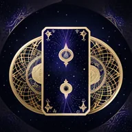

Teljes születési profil — nyugati, kínai, koreai, védikus, kabbalisztikus és népi rendszerek, kronobiológiával együtt. Ingyenes, regisztráció nélkül — minden számítás a saját gépeden fut.

Ha megadod a párod születési adatait, a profilban szinasztria-elemzés is készül kettőtökről: képletközi fényszögek, összhang-mutatók, házátfedések.